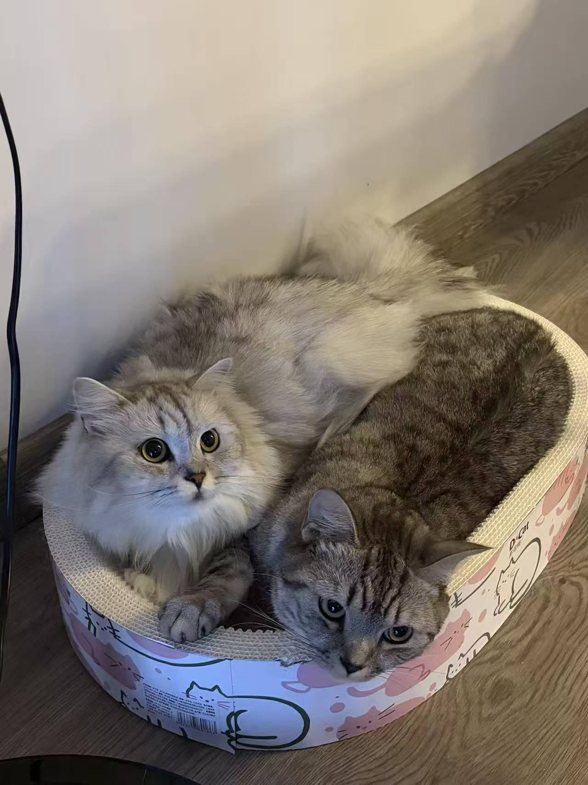

Hello! I am a PhD student in Computer Science and Technology at the University of Electronic Science and Technology of China, supervised by Prof. Chaoning Zhang.
My research interests include multimodal LLM agents, open-world agents, chain-of-thought reasoning, memory, and multi-agent collaboration. I mainly use Minecraft as an experimental environment to study how agents transfer experience, build reusable skills, adapt to new tasks, and collaborate or compete over long-term interactions.
In 2023, I was a visiting researcher at KAIST, working on artificial intelligence research and analysis.
Currently, I am particularly interested in multimodal agents with long-term memory, experience-driven skill learning, and multi-agent coordination in open-world environments. I am also exploring role-playing agents, agent evaluation, and self-improving agent systems. If you are working on related topics, please feel free to contact me at lch17692405449@gmail.com.
🔥 News
- 2026: 🎉 Role Consistency in Role-Playing Agents: A Survey of Evaluation, Memory, Reasoning, Alignment, and Safety is accepted by EMNLP 2026 Findings.
- 2026: 🎉 Experience Transfer for Multimodal LLM Agents in Minecraft Game is accepted by CVPR 2026.
- 2026: 🎉 Agent-GWO: Collaborative Agents for Dynamic Prompt Optimization in Large Language Models is accepted by ACL 2026 Findings.
- 2026: 🎉 Text Summarization via Global Structure Awareness is accepted by ICLR 2026.
- 2026: 🎉 Gated Coordination for Efficient Multi-Agent Collaboration in Minecraft Game is accepted by ACM MM 2026.
- 2026: 🔥 We are building an open-world benchmark for agent competition, collaboration, and skill transfer in Minecraft.
📝 Publications
Selected publications grouped by research topic; papers may appear in more than one section. See Google Scholar for the complete list.
🕹️ Open-World Agents & Multi-Agent Systems
- 🔥 CVPR 2026 Experience Transfer for Multimodal LLM Agents in Minecraft Game, Chenghao Li, J. Liu, S. Zhang, H. Jian, H. Ni, et al. Agent Multimodal
- ACL 2026 Findings Agent-GWO: Collaborative Agents for Dynamic Prompt Optimization in Large Language Models, X. Wang, C. Zhang, Chenghao Li, S. Chen, Q. Sun, et al. Agent
- ACM MM 2026 Gated Coordination for Efficient Multi-Agent Collaboration in Minecraft Game, H. Jian, Chenghao Li, H. Wang, J. Shuai, J. Guo, et al. Multi-Agent
🎯 Reasoning & Memory
- 🔥 CVPR 2026 Experience Transfer for Multimodal LLM Agents in Minecraft Game, Chenghao Li, J. Liu, S. Zhang, H. Jian, H. Ni, et al. Memory Multimodal
- ACL 2026 Findings Agent-GWO: Collaborative Agents for Dynamic Prompt Optimization in Large Language Models, X. Wang, C. Zhang, Chenghao Li, S. Chen, Q. Sun, et al. Reasoning Agent
- ACM MM 2026 Gated Coordination for Efficient Multi-Agent Collaboration in Minecraft Game, H. Jian, Chenghao Li, H. Wang, J. Shuai, J. Guo, et al. Memory Multi-Agent
- ICLR 2026 Text Summarization via Global Structure Awareness, J. Zhang, C. Zhang, S. Chen, Y. Liu, Chenghao Li, et al. Structure
- ICLR 2026 Workshop MemoGraph: Augmenting LLMs with Explicit Episodic Memory for Multi-step Mathematical Reasoning, Y. Li, Y. Zhou, G. Chen, X. Wang, Chenghao Li, C. Zhang. Memory
- Arxiv 2025 Understanding Chain-of-Thought in Large Language Models via Topological Data Analysis, Chenghao Li, C. Zhang, Y. Lu, S. Chen, X. Wang, et al. Reasoning
- Arxiv 2025 Syzygy of Thoughts: Improving LLM CoT with the Minimal Free Resolution, Chenghao Li, C. Zhang, Y. Lu, J. Zhang, Q. Sun, et al. Reasoning
- 🔥 EMNLP 2026 Findings Role Consistency in Role-Playing Agents: A Survey of Evaluation, Memory, Reasoning, Alignment, and Safety, Chenghao Li, X. Xiao, Y. Xiao, Z. Xu, X. Li, et al. Role-Playing Agent Survey Citations: 0
👀 Generative AI & Sequence Modeling
- Pattern Recognition 2024 Toward a Deeper Understanding: RetNet Viewed through Convolution, Chenghao Li, C. Zhang. Sequence Modeling
- Arxiv 2023 A Complete Survey on Generative AI (AIGC): Is ChatGPT from GPT-4 to GPT-5 All You Need?, C. Zhang, C. Zhang, S. Zheng, Y. Qiao, Chenghao Li, et al. AIGC Survey Citations: 375
- Arxiv 2023 One Small Step for Generative AI, One Giant Leap for AGI: A Complete Survey on ChatGPT in AIGC Era, C. Zhang, C. Zhang, Chenghao Li, Y. Qiao, S. Zheng, et al. AIGC Survey Citations: 273
- Arxiv 2023 Generative AI Meets 3D: A Survey on Text-to-3D in AIGC Era, Chenghao Li, C. Zhang, J. Cho, A. Waghwase, L.-H. Lee, et al. Text-to-3D Survey Citations: 152
- Arxiv 2023 A Survey on Segment Anything Model (SAM): Vision Foundation Model Meets Prompt Engineering, C. Zhang, J. Cho, F. D. Puspitasari, S. Zheng, Chenghao Li, et al. Vision Foundation Model Survey Citations: 124
📚 Surveys
- 🔥 EMNLP 2026 Findings Role Consistency in Role-Playing Agents: A Survey of Evaluation, Memory, Reasoning, Alignment, and Safety, Chenghao Li, X. Xiao, Y. Xiao, Z. Xu, X. Li, et al. Role-Playing Agent Survey Citations: 0
- Arxiv 2025 A Comprehensive Survey in LLM(-Agent) Full Stack Safety: Data, Training and Deployment, K. Wang, G. Zhang, Z. Zhou, J. Wu, M. Yu, ..., Chenghao Li, et al. Safety Survey Citations: 165
- Arxiv 2023 A Complete Survey on Generative AI (AIGC): Is ChatGPT from GPT-4 to GPT-5 All You Need?, C. Zhang, C. Zhang, S. Zheng, Y. Qiao, Chenghao Li, et al. AIGC Survey Citations: 375
- Arxiv 2023 One Small Step for Generative AI, One Giant Leap for AGI: A Complete Survey on ChatGPT in AIGC Era, C. Zhang, C. Zhang, Chenghao Li, Y. Qiao, S. Zheng, et al. AIGC Survey Citations: 273
- Arxiv 2023 Generative AI Meets 3D: A Survey on Text-to-3D in AIGC Era, Chenghao Li, C. Zhang, J. Cho, A. Waghwase, L.-H. Lee, et al. Text-to-3D Survey Citations: 152
- Arxiv 2023 A Survey on Segment Anything Model (SAM): Vision Foundation Model Meets Prompt Engineering, C. Zhang, J. Cho, F. D. Puspitasari, S. Zheng, Chenghao Li, et al. Vision Foundation Model Survey Citations: 124

Da Mi & Xiao Xiao Mi Pets
- I have two adorable cats named Da Mi and Xiao Xiao Mi. They have kept me company through countless hours of research, and I would like to give them a special thank-you!